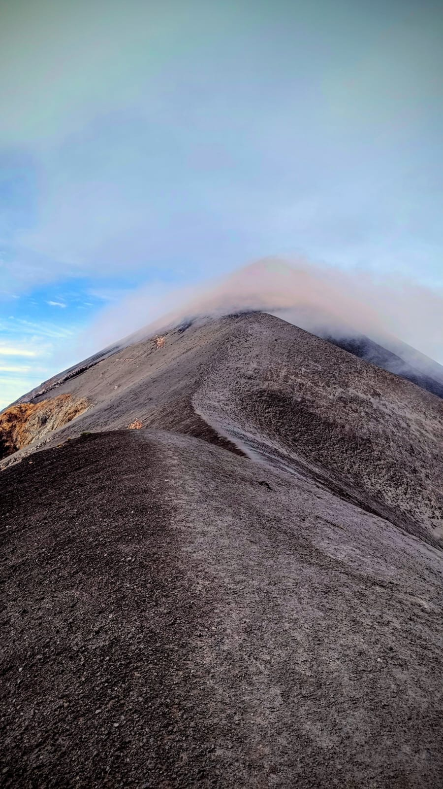
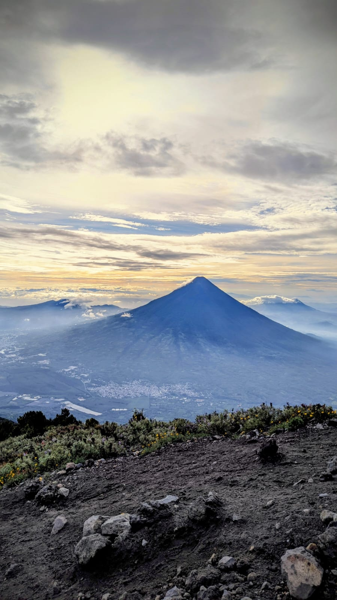
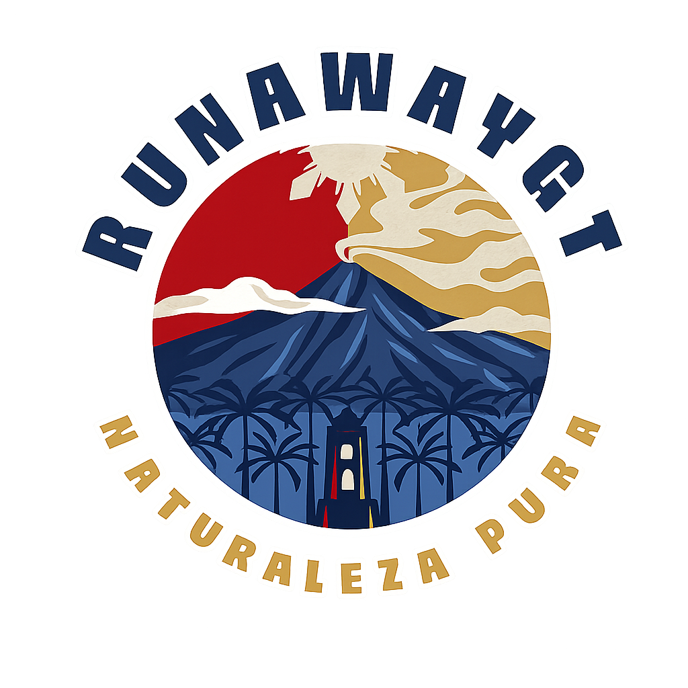
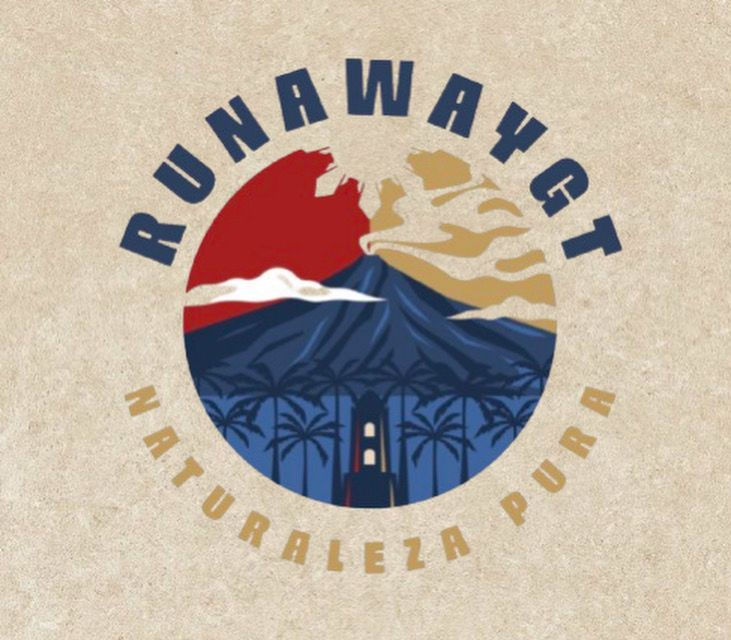
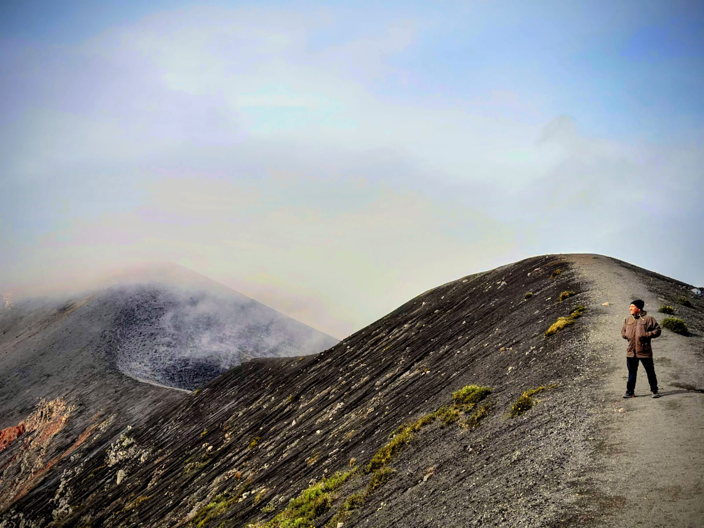

Tours de volcanes en Guatemala
Aventura que se vive en tribu.
Ascensos, amaneceres, campamentos y vistas que exigen piernas y conectan personas. Descubre rutas para distintos niveles y entra a cada destino para ver fotos, datos y detalles de la experiencia.
- Rutas de 1 día y campamento
- Fotografía y naturaleza
- Experiencias para grupos


Comunidad
Salidas pensadas para compartir el camino, el fuego y el amanecer.
Fotografía
Galerías inmersivas y paisajes para capturar cada tramo de la ruta.
Aventura real
Niveles de exigencia claros para elegir la experiencia correcta.
Primera impresión
Impacto visual, terreno volcánico y sensación de expedición.

Salidas con energía de grupo
Desde caminatas accesibles hasta travesías nocturnas y campamentos frente a actividad volcánica.

Escenarios que no necesitan filtro
Cruceros de lava, cráteres, bosque nuboso, lagunas y cumbres con una narrativa visual consistente.
Destinos
Elige tu próxima ruta.
Cada tarjeta resume esfuerzo, paisaje y tipo de experiencia. Al hacer clic se abre la ficha completa del lugar.
Experiencias optimizadas para descubrir
Tours a volcanes de Guatemala para senderismo, campamento y fotografía.
Runaway GT reúne rutas volcánicas icónicas y menos obvias de Guatemala para viajeros que buscan naturaleza intensa, logística clara y recorridos con identidad local. Desde el ascenso rápido a Pacaya hasta campamentos de alta montaña en Acatenango y miradores hacia Fuego, cada opción presenta fotos, datos del terreno y recomendaciones de nivel físico.
Para grupos y escapadas
Opciones para salidas de un día, fines de semana y experiencias de madrugada con amanecer.
Información útil antes de reservar
Tiempo estimado, distancia, altitud, actividades y exigencia para decidir con criterio.
Enfoque visual y conversión
Imágenes protagonistas, CTA directo a WhatsApp y páginas de detalle para cada destino.
Reserva directa
Arma tu salida por WhatsApp.
El formulario prepara un mensaje automático para el número +502 5192 7924 con el destino de interés y los datos básicos del grupo.
Abrir chat directo